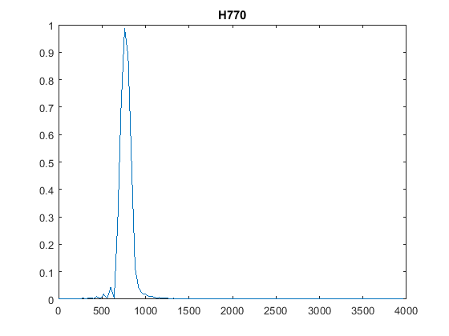
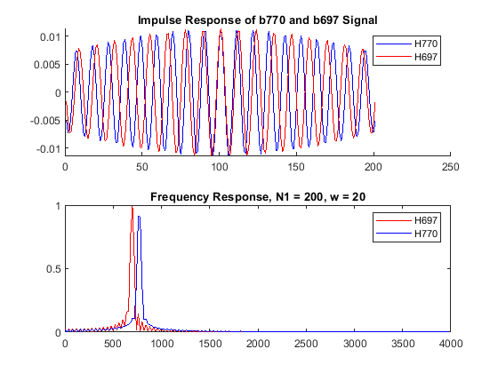

Contents
ELEN 133L Prelab 4
clc clear all close all % Given parameters N = 100; w = 80; fs = 8000; fc770 = 770; fc697 = 697; wn770 = [fc770-w, fc770+w]/(fs/2); wn697 = [fc697-w, fc697+w]/(fs/2); b770 = fir1(N, wn770, rectwin(N+1) ); b697 = fir1(N, wn697, rectwin(N+1) ); [H770, fv] = freqz(b770,1,N,fs); [H697, fv] = freqz(b697,1,N,fs); % Plotting figure(1) plot(fv,abs(H770)) title('H770') % The magnitude of the fr is about 1 at 770 Hz. % The magnitude of the fr is about 0.4 at 851Hz. % The magnitude of the fr is about 0.4 at 698 Hz. % Below 770Hz, the plot first hits around zero at 640Hz. % Above 770Hz, the plot first hits around zero at 1000Hz % Plotting the one sided spectra for both 770 and 697 figure(2) subplot(2,1,1) hold on plot(b770,'-b') plot(b697,'-r') hold off title('Impulse Response of b770 and b697 Signal') legend('H770','H697') subplot(2,1,2) plot(fv, abs(H697),'-r', fv, abs(H770),'-b') title('Frequency Response, N1 = 100, w = 80') legend('H697','H770')
Step 5
N=100; w = 40; wn770 = [fc770-w, fc770+w]/(fs/2); wn697 = [fc697-w, fc697+w]/(fs/2); b770 = fir1(N, wn770, rectwin(N+1) ); b697 = fir1(N, wn697, rectwin(N+1) ); [H770, fv] = freqz(b770,1,N,fs); [H697, fv] = freqz(b697,1,N,fs); figure(3) subplot(2,1,1) hold on plot(b770,'-b') plot(b697,'-r') hold off title('Impulse Response of b770 and b697 Signal') legend('H770','H697') subplot(2,1,2) plot(fv, abs(H697),'-r', fv, abs(H770),'-b') title('Frequency Response, N1 = 100, w = 40') legend('H697','H770') % Each peak is at a defined value but there is a lot of overlap. N = 100; w = 20; wn770 = [fc770-w, fc770+w]/(fs/2); wn697 = [fc697-w, fc697+w]/(fs/2); b770 = fir1(N, wn770, rectwin(N+1) ); b697 = fir1(N, wn697, rectwin(N+1) ); [H770, fv] = freqz(b770,1,N,fs); [H697, fv] = freqz(b697,1,N,fs); figure(4) subplot(2,1,1) hold on plot(b770,'-b') plot(b697,'-r') hold off title('Impulse Response of b770 and b697 Signal') legend('H770','H697') subplot(2,1,2) plot(fv, abs(H697),'-r', fv, abs(H770),'-b') title('Frequency Response, N1 = 100, w = 20') legend('H697','H770') % Each peak is at a defined value but there is a lot of overlap. N = 200; w = 20; wn770 = [fc770-w, fc770+w]/(fs/2); wn697 = [fc697-w, fc697+w]/(fs/2); b770 = fir1(N, wn770, rectwin(N+1) ); b697 = fir1(N, wn697, rectwin(N+1) ); [H770, fv] = freqz(b770,1,N,fs); [H697, fv] = freqz(b697,1,N,fs); figure(5) subplot(2,1,1) hold on plot(b770,'-b') plot(b697,'-r') hold off title('Impulse Response of b770 and b697 Signal') legend('H770','H697') subplot(2,1,2) plot(fv, abs(H697),'-r', fv, abs(H770),'-b') title('Frequency Response, N1 = 200, w = 20') legend('H697','H770') % Each peak is at a defined value but there is a lot of overlap.
Step 6
Compare the results of Steps 4 and 5 with respect to the filter’s ability to suppress one of the tones. What is the effect of reducing w? What is the effect of increasing N? Chose a set of values for N and w that you think would be the best to use in filters that would reliably distinguish the row 2 tone from the row 1 tone and j
%Increasing 2 makes it much more stable while increase n increases the %accuracy of perception as we take more samples. I think 150 and 2 would be %great.